Large trees, up to 35 m tall.
ದೊಡ್ಡದಾದ ಈ ಮರಗಳು 35 ಮೀ ಎತ್ತರದವರೆವಿಗೆ ಬೆಳೆಯುತ್ತವೆ.
35 മീറ്റര് വരെ ഉയരത്തില് വളരുന്ന വന്മരങ്ങള്.
உயர்ந்த பெரிய மரம் 35 மீ. உயரம் வரை வளரக்கூடியது.
Bark smooth, grey.
ತೊಗಟೆಯ ಮೇಲ್ಮೈ ನಯವಾಗಿದ್ದು ಬೂದು ಬಣ್ಣದಲ್ಲಿರುತ್ತದೆ.
മിനുസമാര്ന്ന, ചാര നിറത്തിലുള്ള പുറംതൊലി.
மரத்தின் பட்டை வழுவழுப்பானது, பழுப்பு நிறத்துடன் காணப்படும்.
Branchlets stout, ferruginous pubescent.
ಕಿರುಕೊಂಬೆಗಳು ಬಲಿಷ್ಟವಾಗಿದ್ದು,ತುಕ್ಕಿನ ಬಣ್ಣವುಳ್ಳ ಮೃದುತುಪ್ಪಳದಿಂದ ಕೂಡಿರುತ್ತದೆ.
ഉറച്ചതും തുരുമ്പന് രോമാവൃതവുമായ ഉപശാഖകള്.
சிறிய நுனிக்கிளைகள் தடிமனாகவும், பொன் நிறமான செம்பழுப்பு உரோமங்கள் கொண்டது.
Latex black.
ಸಸ್ಯಕ್ಷೀರ ಕಪ್ಪುಬಣ್ಣವುಳ್ಳದಾಗಿರುತ್ತದೆ
കറുത്ത സ്രവം.
கறுப்பு நிறத்துடன் காணப்படும்.
Leaves simple, alternate, spiral, clustered at the twig ends; petiole 2 cm long, ferruginous tomentose, with 2 pairs of stout, densely tomentose spurs; lamina 15-44 x 10-17 cm, oblanceolate, upper half broadly triangular with acuminate apex, lower half narrow with cuneate base, margin entire, coriaceous, ferruginous tomentose beneath, glabrous above; midrib flat and glabrous above; secondary_nerves 22-32 pairs; tertiary_nerves broadly reticulate.
ಎಲೆಗಳು ಸರಳ, ಪರ್ಯಾಯ – ಸುತ್ತು ಜೋಡನಾ ವ್ಯವಸ್ಥೆಯಲ್ಲಿ ಕುಡಿಕೊಂಬೆಗಳ ತುದಿಯಲ್ಲಿ ಗುಂಪಾಗಿರುತ್ತವೆ;ಎಲೆತೊಟ್ಟು 2 ಸೆಂ.ಮೀ. ಉದ್ದವಾಗಿದ್ದು,ತುಕ್ಕು ಬಣ್ಣದ ಮೃದುತುಪ್ಪಳದಿಂದ ದಟ್ಟವಾಗಿ ಆವರಿಸಿದ್ದು,ಎರಡು ಜೋಡಿ ದೃಢವಾದ ಚಾಚು ಚೀಲಗಳ ಸಮೇತವಿರುತ್ತದೆ; ಎಲೆ ಪತ್ರ 15-44 x 10 -17ಸೆಂ.ಮೀ. ಗಾತ್ರವಿದ್ದು, ಬುಗುರಿ-ಈಟಿ ಸಮ್ಮಿಶ್ರಾಕಾರದ ಹೊಂದಿರುರುತ್ತದೆ;ಪತ್ರದ ಮೇಲಿನ ಅರ್ಧ ಭಾಗ ವಿಶಾಲವಾದ ತ್ರಿಕೋನಾಕಾರದಲ್ಲಿದ್ದು,ಉಪ-ಕ್ರಮೇಣವಾಗಿ ಚೂಪಾಗುವ ತುದಿಯನ್ನೂ ಕೆಳಗಿನ ಅರ್ಧ ಭಾಗ ಕಡಿಮೆ ಅಗಲದಲ್ಲಿದ್ದು ಬೆಣೆಯಾಕಾರದ ಬುಡಭಾಗವನ್ನೂ ಹೊಂದಿರುತ್ತವೆ; ಅಂಚು ನಯವಾಗಿದ್ದು,ಮೇಲ್ಮೈ ತೊಗಲಿನ ತರಹವಿರುತ್ತದೆ. ಪತ್ರಗಳ ತಳಭಾಗ ತುಕ್ಕಿನ ಬಣ್ಣದ, ದಟ್ಟ ಮೃದುತುಪ್ಪಳದಿಂದ ಕೂಡಿದ್ದು, ಮೇಲ್ಭಾಗ ರೋಮರಹಿತವಾಗಿರುತ್ತದೆ; ಮಧ್ಯನಾಳ ಪತ್ರದ ಮೇಲ್ಭಾಗದಲ್ಲಿ ಚಪ್ಪಟ್ಟೆಯಾಗಿದ್ದು ರೋಮರಹಿತವಾಗಿರುತ್ತದೆ,;ಪತ್ರದಲ್ಲಿ ಸುಮಾರು 22-32 ಜೋಡಿ ಎರಡನೇ ದರ್ಜೆ ನಾಳಗಳಿದ್ದು ಮೂರನೇ ದರ್ಜೆ ನಾಳಗಳು ವಿಶಾಲವಾದ ಜಾಲಬಂಧ ವಿನ್ಯಾಸ ಹೊಂದಿರುತ್ತವೆ.
ഇലകള് ലഘുവും, വര്ത്തുളമായി, ഏകാന്തരക്രമത്തില് കമ്പുകളുടെ അറ്റത്ത് കൂട്ടമായി ക്രമീകരിച്ചിരിക്കുന്നതുമാണ്; തരുമ്പന് രോമാവൃതമായ, 2 സെ.മീ നീളമുള്ള ഇലഞെട്ട്, നിറയെ രോമാവൃതമായ, 2 ജോഡി ഉറച്ച കുതിമുള്ള് പോലുള്ള മുഴപ്പാട് കൂടിയതാണ്; പത്രഫലകം 15 മുതല് 44 സെ.മീ. നീളവും 10 മുതല് 17 സെ.മീ. വിതിയുള്ളതാണ്. അപകുന്താകാരത്തിലുള്ള ഇതിന്റെ മേല് പകുതി ദീര്ഘാഗ്രത്തോടുകൂടിയ, വീതിയേറിയ ത്രികോണാകാരത്തിലാണ്, കീഴ് പകുതി വീതി കുറഞ്ഞതും ആപ്പ് ആകൃതിയിലുള്ള പത്രാധാരത്തോടുകൂടിയതതുമാണ്, അരികുകള് അവിഭജിതമാണ്, ചര്മ്മില പ്രകൃതത്തോടു കൂടിയ ഇതിന്റെ കീഴ്ഭാഗം തുരുമ്പന് രോമാവൃതവും, മേല്ഭാഗം അരോമിലവുമാണ്; മധ്യസിര മുകളില് പരന്നതും അരോമിലവുമാണ്; 22 മുതല് 32 ജോഡി ദ്വിതീയ ഞരമ്പുകളുണ്ട്; ത്രിതീയ ഞരമ്പുകള് വീതിയേറിയ ജാലികാ സിരാവിന്യാസം തീര്ക്കുന്നു.
இலைகள் தனித்தவை, மாற்றுஅடுக்கமானவை, சுழல் போன்று அமைந்தவை, நுனிக்கிளையில் இலைகள் கூட்டமாக மற்றும் நெருக்கமாகமைந்தவை; இலைக்காம்பு 2 செ.மீ. நீளமுடையது, பொன் நிறமான அரக்கு உரோமங்கள் இலைக்காம்பில் காணப்படும், மற்றும் இரண்டு ஜோடி தடித்த அடர்த்தியான மென்உரோமங்களுடைய ஸ்பர்; இலை அலகு 15-44 X 10-17 செ.மீ., தலைகீழ் ஈட்டி வடிவம், அலகின் நுனி அதிக்கூரியதுடன் அகலமான முக்கோண வடிவ ம், அலகின் தளம் குறுகிய ஆப்பு வடிவமுடையது, அலகின் விளிம்பு முழுமையானது, கோரியேசியஸ், பொன் நிறமான அரக்கு மென்உரோமங்கள் இலையின் கீழ்பரப்பிலும், மேற்புறத்தில் உரோமங்களற்றும் காணப்படும், மையநரம்பு இலையின் பரப்பிற்கு சமமானது மற்றும் உரோமங்களற்றும் காணப்படும்; இரண்டாம் நிலை நரம்புகள் 22-32 ஜோடிகள்; மூன்றாம் நிலை நரம்புகள் அகன்ற வலைபின்னல் அமைப்பு கொண்டது.
Inflorescence terminal panicle, brown tomentose; flowers polygamous, white.
ಹೂಗಳು ಶ್ವೇತ ಬಣ್ಣದವು ಹಾಗೂ ಸಂಕೀರ್ಣಲಿಂಗಿಗಳಾರುತ್ತವೆ ಹಾಗೂ ಕಂದು ಬಣ್ಣದ ದಟ್ಟ- ಮೃದುತುಪ್ಪಳದಿಂದ ಕೂಡಿದ, ತುದಿಯಲ್ಲಿರುವ, ಪುನರಾವೃತ್ತಿಯಾಗಿ ಕವಲೊಡೆದ ಮಧ್ಯಾಭಿಸರ ಪುಷ್ಪಮಂಜರಿಯಲ್ಲಿರುತ್ತವೆ.
പൂങ്കുലകള് തവിട്ട് നിറത്തിലുള്ള, രോമാവൃതമായ, ഉച്ഛസ്ഥപാനിക്കിളുകളാണ്, പൂക്കള് വെളുത്തതും ബഹുലിംഗികളുമാണ്.
மஞ்சரி தண்டின் நுனியில் அமைந்த பேனிக்கிள், அரக்கு நிறமான மென்உரோமங்கள் கொண்டது, மலர்கள் இருபாலானவை, வெள்ளை நிறமானது.
Drupe ellipsoid and little exerted from torus, 2.2 cm long, rusty tomentose, 1-seeded.
ಕಾಯಿಗಳು ಡ್ರೂಪ್ ಮಾದರಿಯವು; ಕಾಯಿಗಳು ಒಂದು ಬೀಜವನ್ನೊಳಗೊಂಡಿದ್ದು 2.2ಸೆಂ.ಮೀ ಉದ್ದವಿರುತ್ತವೆ ಹಾಗೂ ಪುಷ್ಪಪೀಠದಿಂದ ಕೊಂಚ ಮುಂಚಾಚಿಕೊಂಡಿರುತ್ತವೆ.ಕಾಯಿಗಳ ಮೇಲ್ಮೈ ತುಕ್ಕು ಬಣ್ಣದ ದಟ್ಟ ಮೃದುತುಪ್ಪಳದಿಂದ ಕೂಡಿರುತ್ತದೆ.
കായ്കള് ടോറസില് നിന്നും അല്പ്പം പുറത്തേക്ക് തള്ളിനില്ക്കുന്ന, 2.2 സെ.മീ. നീളമുള്ള, തുരുമ്പുപോലത്തെ 3രോമങ്ങളോട്കൂടിയ, ഒറ്റവിത്തുള്ള ദീര്ഘ ഗോളാകാരത്തിലുള്ള അഭ്രകം (ഡ്രൂപ്പ്) ആണ്.
நீள்வட்ட உள்ளோட்டுத்தசைகனி (ட்ரூப்), 2.2 செ.மீ. நீளமுடையது, பூத்தண்டு கிண்ணத்தை விட்டு வெளியில் துறுத்திக்கொண்டிருக்கும், அரக்கு நிறமான உரோமங்கள், ஒரு விதையுள்ள கனி.
 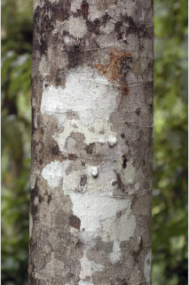
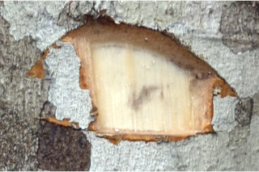
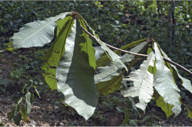
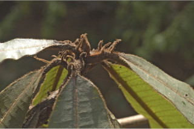
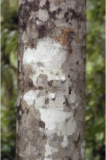
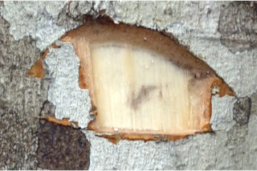
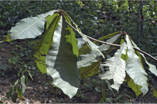
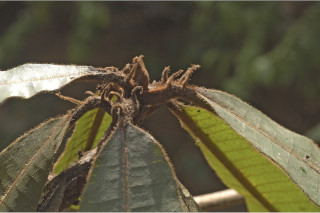


 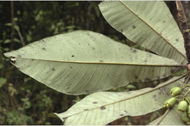
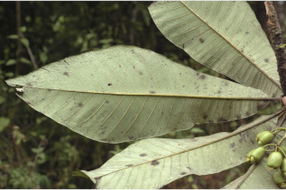
 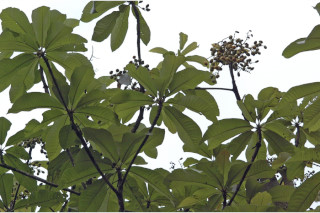
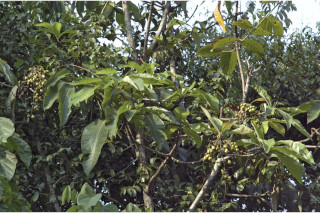
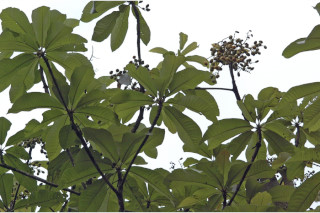
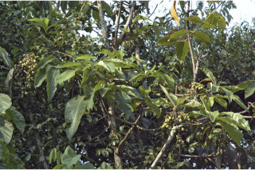
 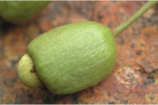
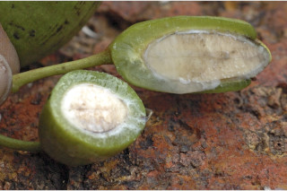
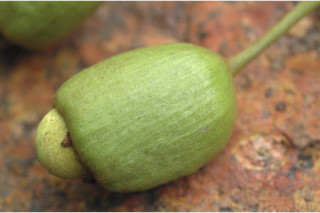
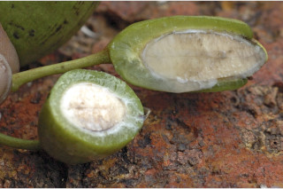